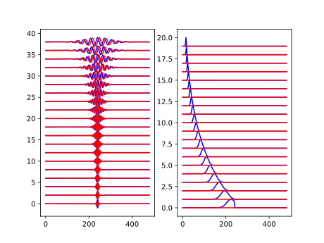

Note
Click here to download the full example code
Morlet Wavelet in time and Fourier domain¶
This example shows how to generate a wavelet filter-bank.
import symjax
import symjax.tensor as T
import matplotlib.pyplot as plt
import numpy as np
J = 5
Q = 4
scales = T.power(2, T.linspace(0.1, J - 1, J * Q))
scales = scales[:, None]
wavelet = symjax.tensor.signal.complex_morlet(5 * scales, np.pi / scales)
waveletw = symjax.tensor.signal.fourier_complex_morlet(
5 * scales, np.pi / scales, wavelet.shape[-1])
f = symjax.function(outputs=[wavelet, waveletw])
wavelet, waveletw = f()
plt.subplot(121)
for i in range(J*Q):
plt.plot(2*i + wavelet[i].real, c='b')
plt.plot(2*i + wavelet[i].imag, c='r')
plt.subplot(122)
for i in range(J*Q):
plt.plot(i + waveletw[i].real, c='b')
plt.plot(i + waveletw[i].imag, c='r')
Total running time of the script: ( 0 minutes 7.230 seconds)